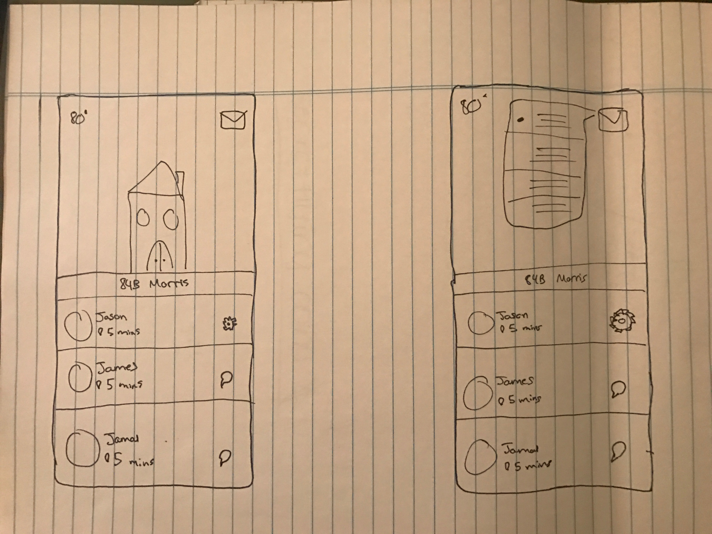
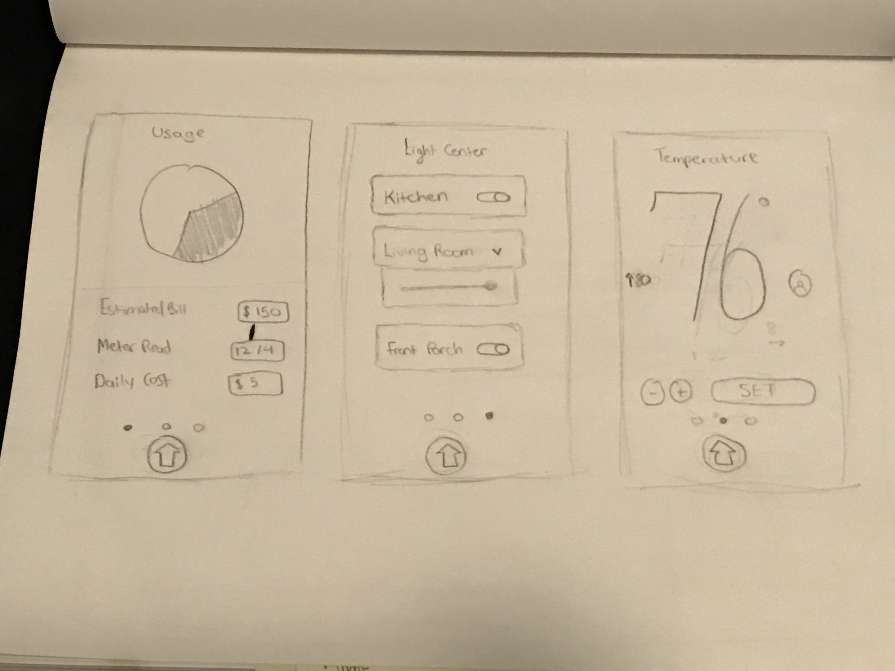
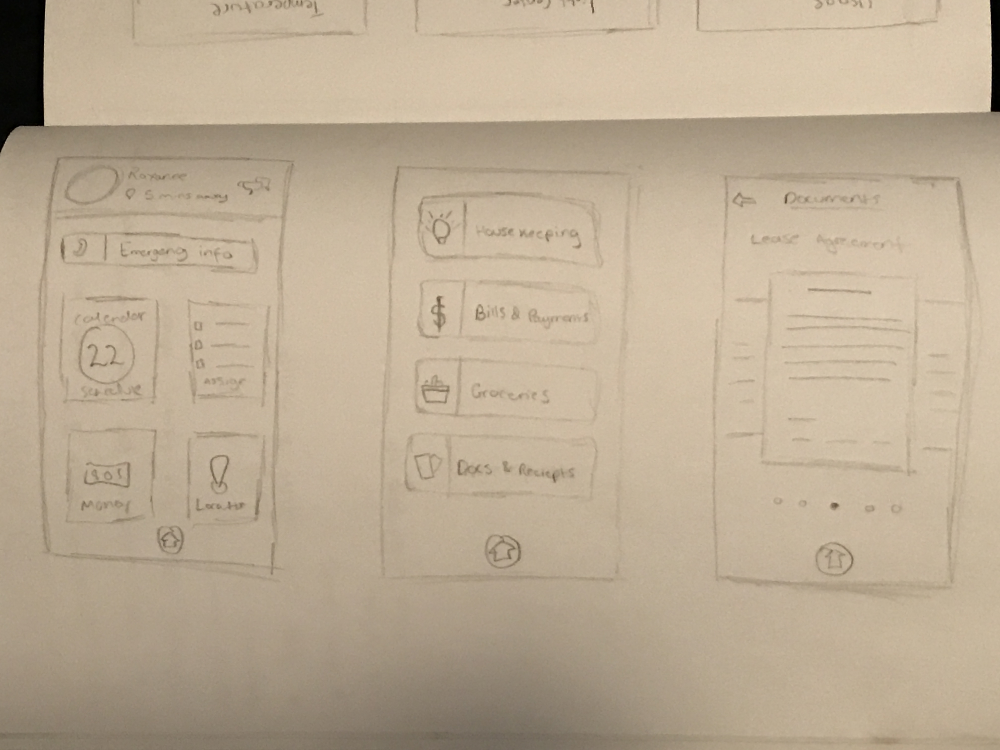
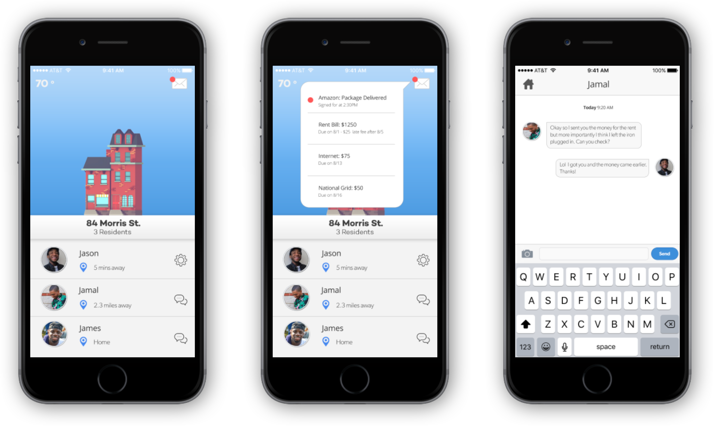

Homies
Overview
Sharing a home or an apartment with someone is one of those things that need to be made easier. When I graduated college I moved to downtown Albany and got a nice apartment with two of my best friends. We each took responsibility for certain bills but the groceries were sort of a free for all along with the thermostat and other things in the house.
So to make things easier and to avoid the annoyance of miscommunication I thought about an application that would make things easier for roommates. The purpose would be to keep the house organized when it came to what is needed and what’s coming next. something that can help you with bills, groceries, deliveries, lease agreements to thermostat control, light control, and the energy use.
Research + Planning
The first place I started was the App Store, I thought that there had to be something that already took care of this. After browsing through and searching the App Store I found numerous to do the things I wanted but not one cohesive app. I wanted something that could be done from one central location, would require one account, and could easily be managed. I came up with a list of features and held off on the ones I thought could be implanted in the second version.
Features
DashboardWith the features listed I knew what I wanted to design, so I began with the sketches.

After narrowing down the options I created the wireframes for the potential pages.

Protoyping
Following the wireframe I moved on to the final design stage where I began to add some life into the designs and create the prototype. Although it is still a work in progress it has greatly helped me understand designing for a mobile platform when its not web based.
